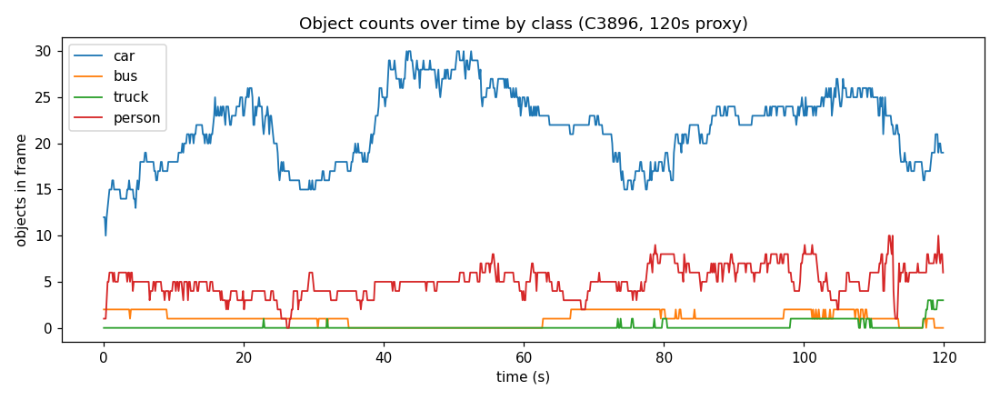
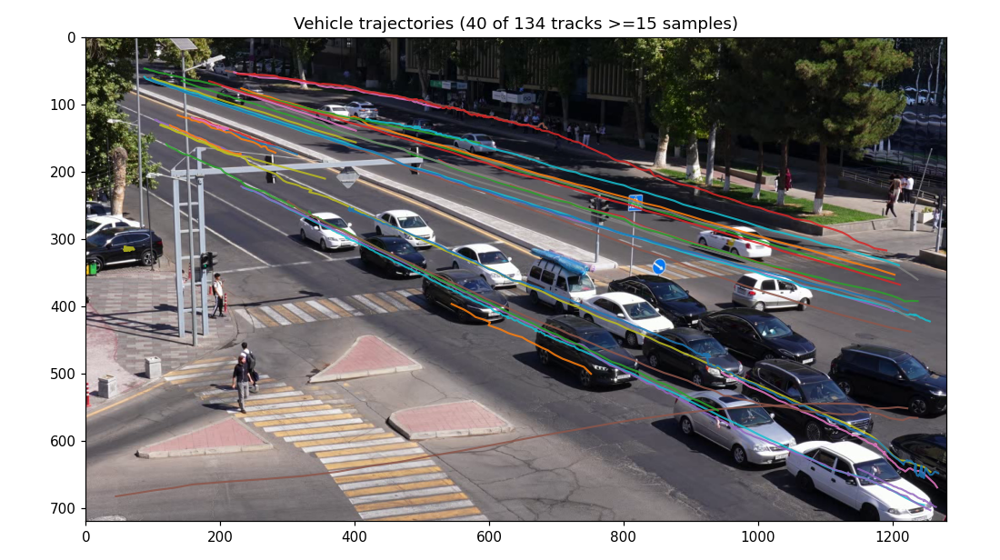
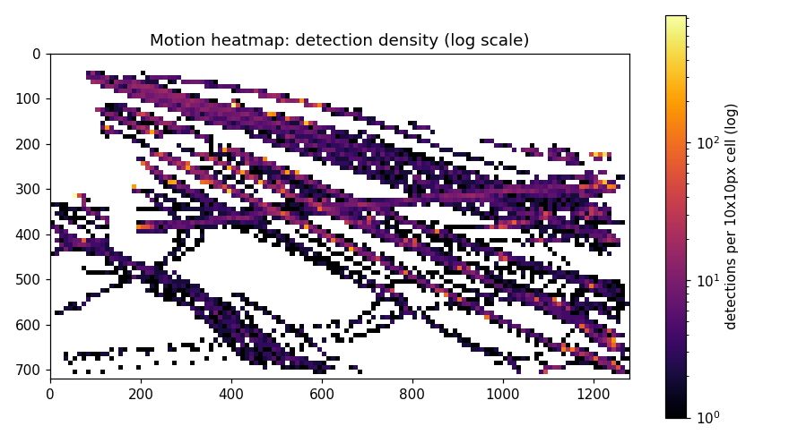
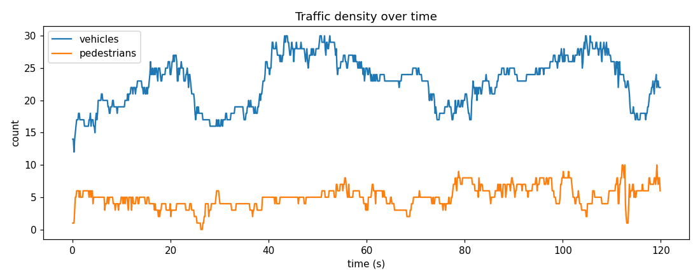
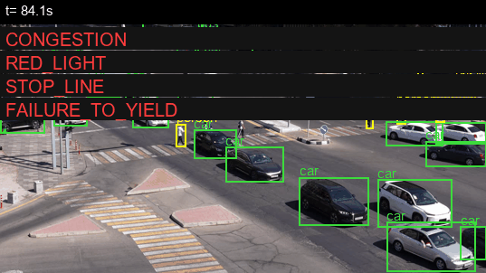

A YOLO11s + ByteTrack tracker feeds a hand-written rules engine that turns raw trajectories into nine classes of traffic event, plus a time-to-collision signal that anticipates accidents before they happen — no training run, no labeled accident footage, just geometry and physics over what the camera already sees.
Part A asks "what happened, and when": every traffic event in a clip, reported as a time segment with a class. Part B asks "what's about to happen": a per-frame probability that an accident starts in the next five seconds, computed causally — no peeking at future frames.
Both run on top of the same foundation: YOLO11s (COCO‑pretrained, unmodified) detects people and vehicles, ByteTrack follows them frame to frame, and a hand‑calibrated map of this specific intersection — carriageway polygons, two crosswalks, one stop line — turns raw pixel trajectories into "on the road," "in the crossing," "past the line." Everything past the detector is rule‑based geometry, not a learned model: no accident dataset, no fine‑tuning, no training run at all.
The other five official classes are deliberately left unpredicted. A class with no real detector behind it still gets scored under the competition's macro‑F1 — and drags the average down — so guessing costs more than it's worth:
The last one stung: wrong_way was
built and tested, then pulled — see the Report below.
One sample clip so far — C3896.MP4,
3840×2160 @ 29.97fps, 340s, daytime, fixed elevated angle, no camera motion. The plots below are
from a 120s / 720p proxy of the same footage, used for faster iteration during development.

Signal-cycled, not free-flowing. Car count swings roughly
15–30 in a repeating ~30‑40s rhythm — this is why congestion
uses a sustained scene-relative fraction, not a fixed vehicle-count threshold.

Mixed-direction carriageways. The near lane bundle mixes both
sides of a two-way boulevard plus a side street. No single "correct heading" per zone —
directly why wrong_way got dropped.

Log scale or bust. A linear-scale version of this heatmap was almost entirely black — a couple of parked cars sitting in one pixel cell for the whole clip drowned out every moving lane. Log scale reveals the real lane geometry.

Steady pedestrian presence. Usually 3–6 people in frame,
spiking to 8–10 at crosswalks — a busy crossing has someone on it most of the
time, which is why failure_to_yield needed a proximity check on top of
simple zone overlap.
This showcase runs the full Part A pipeline (fresh, current code) on the 120s proxy clip
and finds 27 events across 7 of the 9 implemented classes. The full 340s native‑4K
submission file (predictions_samples.json) currently comes back empty for
this one clip — a CPU‑only dev‑machine timing edge case explained honestly in the
Report below, not a correctness bug.
The dashed band marks the 16‑second clip below — the busiest stretch of the video, with six classes active in one window.

Congestion queues in the near lanes while the signal holds
red (stop_line), a car edges into the crossing as a pedestrian is still on it
(failure_to_yield), and moments later a near_miss
and a jaywalking call land in the same window.
solution.py code path, run end-to-end, on this footage. See the
Report for what a real hosted demo would need.
accident/near_miss
classes — the task FAQ explicitly allows reusing it.wrong_way was built and tested, then pulled: this intersection's
carriageway zones genuinely mix multiple legitimate directions (a two-way boulevard plus a side
street), so there was no single "correct heading" to compare against and it badly over-fired.wrong_way and add
illegal_turn / solid_line_crossing.